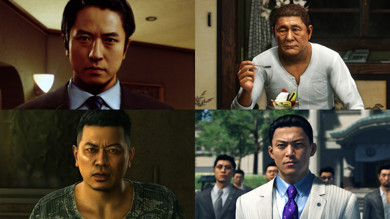
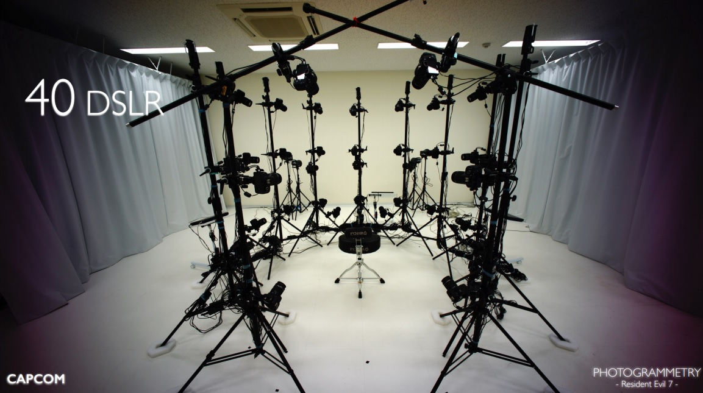

Practical Digital Human Project
Quick Introduction

In this page, I will try to break down the digital human technology using the similar workflow as game production is using. In order to achieve realistic digital human, it is necessary to combine various technologies, and I believe that just digging each of them will be enough for research topic. We would like to present an application paper if we get some results. We are not looking for innovative algorithms, but we focus on build a robust pipeline to achive the current state of the art digital human.
We introduce some useful links to understand what current game industry is doing.
1) 龍が如くにおけるキャラクター制作ワークフロー
2) BIOHAZARD 7 - PHOTOGRAMMETRY -
3) スキャンスタジオ【社内設備特集Vol.1】
4) 「LightCage」採用の最先端フェイススキャナー導入！開発と直結した圧倒的フォトリアルな素材づくりに迫る【社内設備特集Vol.4】
5) Generative Face Models from Light Stage Scans
6) フォトグラメトリーでつくる『デビル メイ クライ 5』のキャラクターモデル
Captruing Devices & 3D Reconstruction

Recenly, many game companies are building own capturing studio using 30-50 DSLRs. They send captured images to RealityCapture or PhotoScan. These softwares are finding matching point, estimating camera parameters, and finally building a large number of point clouds by solving ICP.
We are considering a technique using stereo matching algorighm and a few DSLRs with polarized light as an alternative to the above approach. This is mostly inspired by some disney rsearch works. For capturing device, we plan to use the pixel shift function of Sony's α7ⅳ series that augments 9 DSLRs resoltuions for single shot.
Until we have good state of art stereo matching algorithm, we plan to use RealityCapture to get point clouds. Commercial middleware is based on accumulated know-how, so it can provide stable and high performance results, but we would like tdevelop our own algorithm.
1)Single-Shot High-Quality Facial Geometry and Skin Appearance Capture
2)Practical Dynamic Facial Appearance Modeling and Acquisition
Shrink & Wrapping

Once you have a large number of point clouds, we will apply Shrink & Wrap algorithm. Most productions nowadays have a base mesh that serves as a template for the character, organized by the designer in a neat topology, which can be fitted to the point cloud to control the polygon count budget. Production often uses Maya or R3DS Wrap to get data and we assume they follow as rigid as algorithm.
Until we have good state of ARAP algorithm, we plan to use Maya or R3DS to fit our model to point clouds. Commercial middleware is based on accumulated know-how, so it can provide stable and high performance results, but we would like to develop our own algorithm.
1)As-Rigid-As-Possible Shape Interpolation
Inverse Rendering
Since our capture setup is simpler version of LightStage, we need to estimate specular and normal textures using Inverse Rendering. Mistuba2 is open source and can do inverse rendering, so we plan to extend it to do our demanding.
1)Mistuba2
Facial Animation

Facial animation is completely different topics. facial animation is basically creating blendshapes that complement to create facial expressions. In academia, we often shoot with 20 typical facial expressions and mix them together to create animations.
However, just note the actual production process is much more complicated than this, including the generation of huge number of blendshapes, situational rigs, and hand-applied animation.
1)緻密なキャラクターの表情や破壊表現のためのコンピュートシェーダによるメッシュアニメーション
2)FaceScape: a Large-Scale High Quality 3D Face Dataset and Detailed Riggable 3D Face Prediction
Real Time Rendering

Game developers love real-time rendering with shaders, so there has been a lot of research on human rendering. Real-time renderers are reasonably hard to write, so it may be more efficient to simply follow the Unreal Engine 4 digital human system to keep the cost of the work down. Without having to write huge amounts of shaders, it is possible to move realistic faces by simply pulling in texture and animation data in blueprints. However, if you eventually want to make a real-time renderer for these areas using DirectX or Vulkan, please try it. I think it will be very advantageous for you to get a job!
1) NEXT GENERATION LIFE
Hair Modeling & Simulation

Hair Modeling is another completely different topic. Typically, we model strands by hand, looking at pictures, using Maya xGen or Ornatrix or other middleware. There is a lot of research on automating the creation of strands from photos, but I get the impression that production never used these algorithms and that everything is created by artist hand. I guess there is a huge quality gap between academic and prodcution. If you want to work into this field, it is important to have a sincere attitude towards production.
As for hair simulation, EA frostbite are spending time for this area. These area will requre a lot of fundamental knowldges of physical animation area and some of you want to do that.
1) Strand-based Hair Rendering in Frostbite
2) How Frostbite is Advancing the Future of Hair Rendering Technology
Teeth & Eye capturing and simulation
We may touch these topics some day. However, I don't think that the eyes and teeth are something that will dramatically change the impression, and I think that a certain level of quality can be ensured by using template models. Disney research are doing a lot of these capture researches including eye or teeth capturing.
1) Disney Research Studio
Others
Realistic human is more trending.
1) MetaHumans
2) Character Creator
email: ShinichiKinuwaki [at] gmail.com